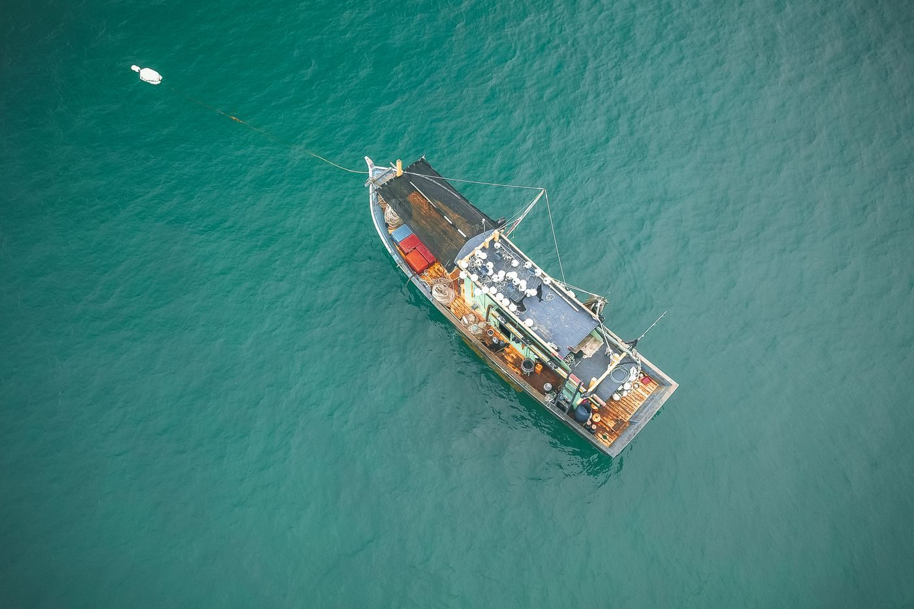
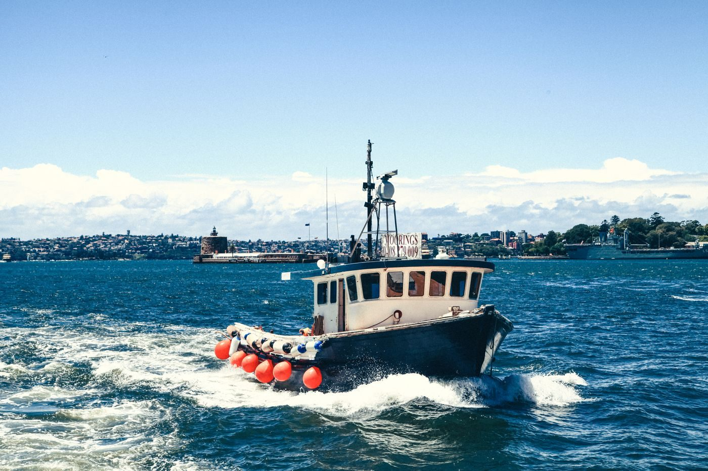
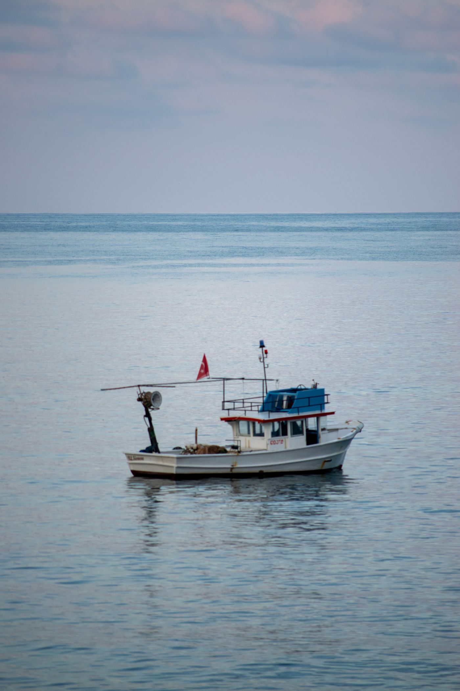

The boat and the trip at Sweet Jody Fishing
Deep-sea party-boat fishing from Destin, on a 56-foot boat with room for up to 40 people fishing, with Capt. Cliff Cox.
Deep-sea party-boat fishing
Deep-sea fishing trips from Destin Harbor aboard the Sweet Jody.
56-foot boat
A 56-foot boat for party-boat fishing trips.
Room for up to 40 people fishing
The boat carries up to 40 people fishing.
Capt. Cliff Cox
Capt. Cliff Cox runs the Sweet Jody charter.
Gallery



All gallery photos are stock photos, labeled as such. They show the kind of work and setting described on this page, not this business.
Contact
Call (850) 650-2500 Email Partyboatsweetjody@gmail.com
Sweet Jody Fishing serves Destin, FL. Questions? Call (850) 650-2500.